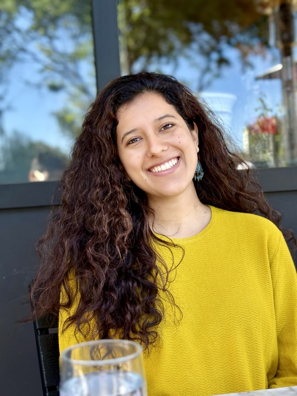

Learning & Development Professional
Designing learning programs
that scale
From scalable training systems to programs reaching 35,000+ learners — I bridge learning science and technology to build development programs that deliver measurable results.
About Me
I'm a learning and development professional who thrives at the intersection of learning science and program strategy. With a PhD (expected May 2026) in Curriculum & Instruction, an MS in Educational Technology, and a BSc Hons in Computing, along with 10+ years of experience designing and managing learning programs across K–12, higher education, and nonprofit organizations, I build scalable training and development systems that are research-grounded and learner-centered.
Currently, as Curriculum Manager at Code For Fun, I lead learning program strategy for CS and STEAM training reaching 35,000+ learners across 300+ partner sites. I bring together instructional design, program management, and stakeholder alignment — from building instructor enablement systems to designing multi-year community development programs that drive measurable outcomes.

Years Experience
Students Reached
Women Empowered
Published Books
Degrees (PhD, MS, BSc)
Featured Projects
Scalable CS & STEAM Curriculum System
Designed and scaled multi-format training programs serving 35,000+ learners across 300+ partner sites.
Challenge
Rapid program expansion created inconsistencies in training quality, facilitator implementation, and rollout timelines across distributed sites.
Approach
- Built standardized learning program development frameworks
- Implemented structured review cycles and defined success metrics
- Designed facilitator enablement systems supporting 50+ educators per season
- Developed seasonal program roadmaps aligned with learner enrollment and operational priorities
Impact
- Increased training delivery consistency across sites
- Accelerated program rollout cycles
- Strengthened training quality at scale
- Supported growth to 35,000+ learners annually
3-Year Community Literacy System Design
Designed and implemented a multi-year adult learning and digital skills program serving 150+ women in underserved communities.
Challenge
Limited access to structured learning opportunities required a sustainable, scalable training model with measurable outcomes.
Approach
- Designed a longitudinal learning pathway spanning foundational literacy to digital skills
- Structured assessment frameworks and learner progression milestones
- Built community-based delivery models
- Aligned program with local capacity and sustainability goals
Impact
- Improved learning outcomes and digital competency across 150+ participants
- Established replicable program framework for community-based implementation
- Strengthened long-term learning access for underserved learners
Instructor Enablement & Online Teaching Certification
Developed a structured facilitator certification program focused on accessibility, learner engagement, and instructional quality.
Challenge
Facilitators required scalable professional development in online delivery and accessibility best practices to improve digital instruction quality.
Approach
- Designed interactive certification modules
- Embedded accessibility standards and engagement frameworks
- Built evaluation and feedback mechanisms
- Structured completion criteria tied to instructional competencies
Impact
- Improved training delivery consistency in online learning environments
- Increased facilitator confidence in digital delivery
- Established quality benchmarks for online training delivery
Learning Innovation: Game-Based Pedagogy Framework
Developed a structured framework for integrating game-based learning into K–12 curriculum systems.
Challenge
Program leaders sought structured ways to incorporate game-based learning without compromising learning objectives or assessment rigor.
Approach
- Designed implementation models for integrating educational gaming platforms
- Aligned game mechanics with defined learning outcomes
- Developed facilitator implementation guidelines
- Structured formative assessment strategies
Impact
- Increased engagement while maintaining instructional rigor
- Provided facilitators with a scalable integration framework
- Supported innovation in curriculum design practices
STEM Career Pathways & Mentorship Program
Designed and launched a structured career development and mentorship program expanding STEM pathways for learners in underserved communities.
Challenge
Limited access to career guidance and role models constrained long-term career awareness and professional development in STEM fields.
Approach
- Developed a repeatable, multi-phase mentorship and career exploration framework
- Defined measurable learning objectives and progression milestones
- Built facilitator playbooks to support scalable implementation
- Implemented evaluation checkpoints to track shifts in confidence and career intent
Impact
- Increased STEM awareness and self-efficacy among participants
- Established a scalable model deployable across cohorts
- Strengthened early-stage workforce pipeline visibility in underserved communities
Skills & Expertise
Bridging education research with technology to design scalable learning experiences.
Program Management
End-to-end learning program design and delivery, cross-functional team leadership, stakeholder alignment, and scaling training initiatives across organizations and distributed sites.
AI Literacy & Collaboration
Developing AI literacy training programs, integrating emerging technologies into learning experiences, and collaborating with product teams to shape responsible AI-powered learning tools.
Learning Science & Research
Learning program design grounded in research, published author in education technology, experienced in UDL, backward design, needs assessment, and competency-based frameworks.
Technical Skills
Professional Experience
A decade of designing learning systems — from community programs in Nepal to training programs across Silicon Valley.
Curriculum Manager
Code For Fun • Sunnyvale, CA
- Oversee all CS and STEAM curricula — including AI literacy — reaching 35,000+ students across 300+ schools
- Lead curriculum development, review, and continuous improvement
- Collaborate with engineering teams on educational tool development
- Train and mentor instructors on curriculum delivery
Graduate Research & Teaching Assistant
ISU — Dept of Teaching & Learning • Terre Haute, IN
- Designed and delivered graduate-level course content (CIMT 657)
- Created interactive SoftChalk learning modules
- Conducted research on educational technology integration
Graduate Assistant
Office of the President & Provost, ISU • Terre Haute, IN
- Supported university-level administrative initiatives
- Assisted with strategic planning and academic program coordination
Curriculum Developer
Hands In Outreach (HIO) • Sheffield, MA
- Designed literacy curriculum for 150+ adult women in Nepal
- Organized STEM career days for high school girls
- Connected career programming to HIO's 'Reach for the Stars' higher education scholarship program (50+ participants)
- Managed community education programs
Graduate Assistant
Office of Education Abroad, ISU • Terre Haute, IN
- Supported international education programs and student advising
- Coordinated education abroad outreach and communications
Opinion Columnist & Writer
Indiana Statesman (ISU campus newspaper) • Terre Haute, IN
- Published opinion columns on education, culture, and international student experience
Computer Teacher & Education Technologist
Lalitpur Secondary Boarding School (LMV) • Lalitpur, Nepal
- Taught computer science and technology courses
- Integrated educational technology into classroom instruction
Education
Academic foundations in computing, learning technology, and curriculum research.
PhD in Curriculum & Instruction
Indiana State University • Terre Haute, IN
Research focus on technology integration in education.
MS in Educational Technology
Indiana State University • Terre Haute, IN
Focus on instructional technology and online learning design.
BSc Hons in Computing (IT)
London Metropolitan University (Islington College) • Kathmandu, Nepal
Foundation in computing, information technology, and software development.
Publications
Published research contributing to the field of education technology.
The Kaleidoscope of Connections
Sitaula, A. (2024). The Kaleidoscope of Connections. In Bridging Cultures, Empowering Futures: Global Citizenship and International Education (pp. 15-18). STAR Scholar Press.
Lap of Mount Everest Our Lab of Learning
Sitaula, A., & Sitaula, G. (2021). Lap of Mount Everest Our Lab of Learning: The Education Structure of Nepal. In J. McConnell-Farmer (Ed.), World of Children: Perceptions and Connections in Sustainability with Reflections during the Pandemic (pp. 181-202). Linton Atlantic Books, USA.
Let's Connect
I'm interested in conversations around learning strategy, organizational capability, and scalable program design. I enjoy connecting with people building learning systems or thinking deeply about how learning drives impact in complex, growing environments.
Based in Mountain View, CA